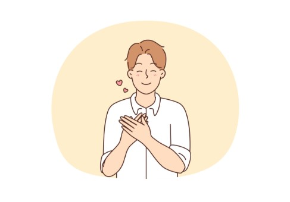
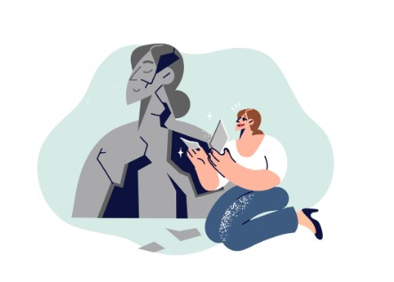
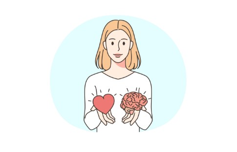

Nobody tells you that positive thinking is exhausting when you do it wrong. The sticky-note affirmations, the forced morning smiles, the relentless reframing of everything awful — it doesn't work because it isn't real. Real positive thinking looks nothing like that. It's quieter. Slower. And far more durable.
At its core, positive thinking is not about what you say to yourself. It is about how you hold what happens to you. It is the difference between gripping an experience and simply being present with it — curious, honest, and uncommitted to any particular emotional verdict.
Well-being is not built in moments of ease. It is built in how gently you meet yourself in moments of resistance.

Resilience isn't the absence of struggle — it's what rises through it.
Why the Mind Pulls Toward the Negative
Your brain was not designed for contentment. It was designed for survival. The same instinct that kept your ancestors scanning the savannah for threats is now scanning your inbox, your relationships, your body — reading for danger in everything. This negativity bias is not a character flaw. It is deeply human. But understanding it changes your relationship with it.
When you notice yourself catastrophizing, ruminating, or interpreting ambiguous events as threats, you aren't broken. You are running ancient software. The practice of positive thinking is, in part, the practice of noticing when that software fires unnecessarily — and gently, firmly, choosing a different response.
Cultivating a Different Lens

Self-compassion is where positive thinking actually begins.
The lens through which you see your life shapes the life you experience. Two people can lose the same job, end the same relationship, or face the same diagnosis — and one will find within it the seeds of redirection while the other only finds confirmation of their worst fears. The difference is not luck. It is learned attention.
This is not spiritual bypassing. It does not mean denying grief, anger, or fear. It means that alongside those feelings, you practice asking: what is this making possible? Not because every hardship has a silver lining, but because every hardship contains a teacher — if you are willing to be taught.
A simple reflection to try tonight. Before sleep, ask yourself three questions: What went right today — even in a small, forgettable way? Where did I show up as the person I want to be? What is one thing I'm genuinely looking forward to, however ordinary?
Don't force grand answers. The value is in the looking, not the finding.
The Practice of Gratitude (That Isn't Annoying)
Gratitude has been reduced to a wellness cliché, which is a shame, because the research behind it is genuinely compelling. Studies across positive psychology consistently show that people who regularly reflect on what they value — not as performance, but as genuine attention — report higher life satisfaction, stronger relationships, and greater resilience under stress.
The key word is genuine. Gratitude journaling as a box-ticking exercise has roughly zero effect. But pausing — actually pausing — to notice the specific, textured, unremarkable goodness in your life creates a different kind of presence. A cup of tea that tastes exactly right. A friend who laughs at your joke. The strange luck of still being here.
Gratitude does not change your circumstances. It changes your relationship with them.


Rewriting the Relationship with Your Own Thoughts

Positive thinking isn't about demolishing old patterns — it's about building new ones alongside them.
The most significant shift in positive thinking is cognitive — not emotional. It happens when you stop treating every thought as a fact, and start treating thoughts as events: things that arise and pass, often without needing any response at all.
Negative thoughts are not the enemy. Unquestioned negative thoughts are. When the mind says you're not good enough or this will never work out, the question is not whether that thought feels true. The question is: is this thought useful? Is it accurate? Is it the only interpretation available?
This process — sometimes called cognitive reframing — isn't about forcing yourself to believe something different. It's about expanding the range of what feels possible. Most negative automatic thoughts are not lies, exactly. They're narrow. Reframing broadens the view.
The Company You Keep (Including Online)
Your environment is not neutral. The conversations you habitually have, the media you consume, the people you spend the most time with — all of it quietly shapes what feels normal to your nervous system. Surrounding yourself with pessimism doesn't make you more realistic. It makes you more habituated to a particular emotional register.
This is not about curating a perfect circle of positivity. It's about being intentional. Who do you feel more yourself around? Who helps you think more clearly? What inputs leave you energized rather than depleted? These are not vanity questions. They are maintenance.
A grounding ritual for overwhelmed days. When everything feels too loud, choose one restorative activity — a walk without your phone, ten minutes of music you love, silent tea, or simply sitting in natural light. Do it not as a solution, but as an act of returning to yourself.
You don't have to fix the problem right now. You just have to come home first.
Knowing When to Reach Further
Positive thinking is a practice, not a cure. There are forms of suffering — depression, anxiety, grief, trauma — that require more than perspective shifts and gratitude lists. The ability to recognise when you need support from a therapist, counsellor, or trusted person is itself an act of self-awareness, not defeat.
Asking for help is not evidence that positive thinking has failed you. It's evidence that you know the difference between what you can reshape alone and what requires a companion for the work.
Resilience Is Not an Endpoint
You don't arrive at resilience and then stay there. You arrive at it, and then life keeps moving. The practice never stops because the challenges never stop. What changes, over time, is not the presence of difficulty but your relationship with it — your speed of return, your depth of steadiness, your growing trust in your own capacity to adapt.
Positive thinking, practised honestly, is not about expecting a life without suffering. It is about knowing, in your bones, that suffering does not have the final word.
In the end, the most powerful thing you can do for your inner life is also one of the most unglamorous: show up to it, again and again, with curiosity instead of judgment. Not because it's easy. Because, over time, it changes who you are.
— end —